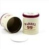

In the world of wine packaging, the choice between wine foil caps and screw caps has long been a topic of discussion among winemakers, distributors, and consumers alike. As a dedicated wine foil caps supplier, I've witnessed firsthand the evolution of this debate and the unique advantages that each closure option brings to the table. In this blog post, I'll delve into the comparison between wine foil caps and screw caps, exploring their characteristics, benefits, and implications for the wine industry.
The Aesthetics and Tradition of Wine Foil Caps
Wine foil caps have a long - standing history in the wine industry, dating back centuries. They are often associated with elegance, luxury, and tradition. The shiny, metallic appearance of foil caps adds a touch of sophistication to the wine bottle, making it more visually appealing on the shelf. This aesthetic quality can significantly enhance the perceived value of the wine, especially for premium and high - end products.
Foil caps come in a variety of colors, finishes, and designs, allowing winemakers to customize the look of their bottles according to their brand identity. Whether it's a classic gold foil for a prestigious vintage or a bold, colorful foil for a modern, artisanal wine, the options are virtually endless. This level of customization can help winemakers stand out in a crowded market and create a strong brand image.
Moreover, the ritual of removing a foil cap before opening a wine bottle is deeply ingrained in wine - drinking culture. It adds an element of ceremony to the experience, making it more special and memorable for consumers. This tradition is particularly important in fine dining establishments and wine - tasting events, where the presentation and experience of opening a bottle are just as important as the taste of the wine itself.
The Functionality of Wine Foil Caps
Beyond their aesthetic appeal, wine foil caps also serve several practical functions. One of the primary purposes of a foil cap is to protect the cork from damage and contamination. The cork is a crucial component of the wine bottle closure system, as it allows for a small amount of oxygen to interact with the wine over time, which can enhance its flavor and aroma. However, corks are vulnerable to mold, insects, and physical damage. A foil cap acts as a barrier, shielding the cork from these potential threats and ensuring its integrity.
Foil caps also help to maintain the freshness and quality of the wine by preventing oxidation and leakage. They create a tight seal around the neck of the bottle, reducing the risk of air entering the bottle and spoiling the wine. In addition, the foil cap can prevent the wine from leaking out of the bottle, which is especially important during transportation and storage.
The Advantages of Screw Caps
In recent years, screw caps have gained popularity in the wine industry, particularly for wines that are meant to be consumed relatively young. One of the main advantages of screw caps is their convenience. They are easy to open and close, eliminating the need for a corkscrew. This makes them ideal for casual wine drinkers who want to enjoy a glass of wine without the hassle of dealing with a cork.
Screw caps also provide a more consistent seal than corks, which can vary in quality and porosity. This means that there is less risk of cork taint, a musty off - flavor caused by a chemical compound called TCA (2,4,6 - trichloroanisole) that can sometimes be present in corks. By using screw caps, winemakers can ensure that their wines reach consumers in the best possible condition, with no risk of cork - related spoilage.
Another benefit of screw caps is their cost - effectiveness. They are generally less expensive to produce than corks and foil caps, which can result in significant savings for winemakers, especially for large - scale production. This cost advantage can be passed on to consumers, making wines with screw caps more affordable.
The Limitations of Screw Caps
Despite their many advantages, screw caps also have some limitations. One of the main criticisms of screw caps is their perceived lack of elegance and tradition compared to foil - covered corks. Some consumers associate screw caps with lower - quality wines, even though this is not necessarily the case. This perception can be a challenge for winemakers who are trying to position their wines as premium or high - end products.
In addition, screw caps may not be suitable for all types of wines. Wines that require long - term aging, such as some red wines and fine Champagnes, need a certain amount of oxygen to develop and mature properly. The airtight seal provided by screw caps may not allow for the necessary oxygen exchange, which could affect the aging process and the ultimate flavor of the wine.
Making the Right Choice
When it comes to choosing between wine foil caps and screw caps, there is no one - size - fits - all solution. The decision depends on several factors, including the type of wine, the target market, and the brand image that the winemaker wants to convey.
For premium wines that are intended for long - term aging and are targeted at a traditional, high - end market, wine foil caps are often the preferred choice. Their aesthetic appeal and association with tradition can enhance the perceived value of the wine, while their protective function can ensure the quality of the cork and the wine over time.
On the other hand, for wines that are meant to be consumed young and are targeted at a more casual, modern market, screw caps may be a better option. Their convenience, reliability, and cost - effectiveness make them a practical choice for everyday wines.
However, it's also possible for winemakers to use a combination of both closure options. For example, a winemaker could use foil caps for their flagship wines and screw caps for their entry - level or value - priced wines. This approach allows winemakers to cater to different market segments and meet the diverse needs of consumers.


Our Offerings as a Wine Foil Caps Supplier
As a wine foil caps supplier, we understand the importance of providing high - quality products that meet the specific needs of our customers. We offer a wide range of wine foil caps, including Aluminium Screw Caps Foil Stamping, 33*47mm Aluminum Bottle Caps, and Spirit Bottle Closures.
Our foil caps are made from high - grade aluminum, which is not only durable but also environmentally friendly. We use advanced manufacturing techniques to ensure that our foil caps are of the highest quality, with a perfect fit and a smooth finish. We also offer custom printing and embossing services, allowing winemakers to add their logo, label, or other branding elements to the foil caps.
Whether you're a small, artisanal winery or a large - scale wine producer, we can work with you to find the perfect wine foil caps for your products. Our team of experts is always available to provide advice and support, helping you make an informed decision about your wine packaging.
Contact Us for Your Wine Foil Caps Needs
If you're interested in learning more about our wine foil caps or would like to discuss your specific requirements, we encourage you to get in touch with us. We're committed to providing excellent customer service and delivering high - quality products that meet your expectations. Whether you're looking for a classic, traditional foil cap or a modern, innovative design, we have the expertise and resources to help you achieve your goals.
References
- Robinson, J. (2006). The Oxford Companion to Wine. Oxford University Press.
- Jackson, R. S. (2014). Wine Science: Principles and Applications. Academic Press.
- Varela, C., & Ares, G. (2012). Consumer perception and preferences for wine packaging: A review. Food Research International, 48(2), 391 - 400.